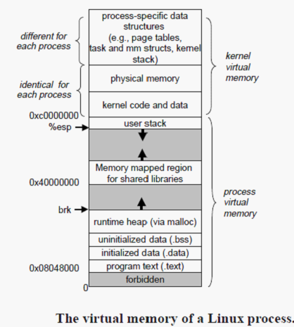

一、常用内存状态监控命令
1.1 top
top命令中可以简单的查看包括内存在内的很多系统与进程信息1
2
3
4
5
6
7
8
9top - 00:29:54 up 342 days, 2:02, 1 user, load average: 0.05, 0.04, 0.05
Tasks: 95 total, 2 running, 93 sleeping, 0 stopped, 0 zombie
%Cpu(s): 0.7 us, 0.7 sy, 0.0 ni, 98.7 id, 0.0 wa, 0.0 hi, 0.0 si, 0.0 st
KiB Mem : 1883724 total, 156236 free, 836264 used, 891224 buff/cache
KiB Swap: 0 total, 0 free, 0 used. 836632 avail Mem
PID USER PR NI VIRT RES SHR S %CPU %MEM TIME+ COMMAND
4385 root 0 -20 129588 14344 5652 S 0.7 0.8 233:59.22 AliYunDun
....
这里面包含了系统的内存信息(第4和5行) 以及进程的内存信息(第5、6、7列)
- 系统内存信息
- 进程内存信息
- VIRT, 虚拟内存
- 这本质上是一个占位符，预计程序会使用这些空间，但其实很多空间都还在硬盘中，未被置换到实际物理内存中。
- 例如未初始化的数据，不占实际内存，但是占用虚拟内存。
- 例如未执行到的代码片段，不占实际内存，但是占用虚拟内存。
- 需要注意虚拟内存并不代表虚拟地址空间。
- 这本质上是一个占位符，预计程序会使用这些空间，但其实很多空间都还在硬盘中，未被置换到实际物理内存中。
- RES, 实际物理内存, 其实也并不是完全准确的物理内存, 主要是两个场景:
- Fork. 若父进程Fork子进程，由于采用CopyOnWrite技术，子进程的虚拟地址空间是完全映射到和父进程相同的物理内存的，所以子进程没有占用物理内存，但是top中还是会显示子进程占用的物理内存。
- 动态链接.两个进程使用导入同一个库时，也会映射到相同的物理内存空间。只有当一个进程的库的内存被写时，才会进行真正的拷贝。
- SHR, 共享内存
- VIRT, 虚拟内存
需要注意，top看到的内存是进程用户态数据所占用的内存。内核态占用的内存可以用slabtop来观察。
1.2 free
1 | total used free shared buff/cache available |
free命令较简单，只讲比较重要的。
- shared, 系统涉及的共享内存，新版本Linux才会显示。
ipcs可以显示共享内存的占用
- Linux内核2.6前:
- buff, 文件写缓存, 主要是为了提升IO密集时的性能，内核先将数据写到缓冲，再同步到慢速设备磁盘上，进行削峰填谷。
- cache, 文件读缓存，将文件读到缓存，其他进程如果读取相同文件，可以复用缓存。
- Linux内核2.6后:
- buffer, 是cache中文件相关的metadata, 维护了cache和硬盘文件的映射关系。
- cache, 和文件相关的，就放在cache中。包含了老版本的buff和cache的功能。
- 老版本的Linux，通常认为buff/cache + free为实际的空闲内存。但其实并不准确，因为buff/cache并不一定能够完全被回收。
- buff/cache其实括了共享内存的数据大小, tmpfs, 文件读写缓存。其中只有文件读写缓存可以被释放掉。
- 新版本的Linux可以使用available, 代表真实的未被占用的内存
1.3 sar -r
sar是(系统活动报告), -r查看内存相关使用的状态1
2
3
4
5
623时56分01秒 kbmemfree kbmemused %memused kbbuffers kbcached kbcommit %commit kbactive kbinact kbdirty
23时56分02秒 81720 1802004 95.66 138872 614376 2296152 121.89 1339088 279712 572
23时56分03秒 163580 1720144 91.32 138872 614236 2197872 116.68 1260368 279672 772
23时56分04秒 163580 1720144 91.32 138872 614236 2197872 116.68 1260368 279672 772
23时56分05秒 163580 1720144 91.32 138872 614236 2197872 116.68 1260368 279672 772
23时56分06秒 163580 1720144 91.32 138872 614236 2197872 116.68 1260368 279672 836
和free相比，可以进行实时采样，并且把buffer和cached进行了区分。
- kbcommit, 是指的承诺会给所有进程分配的内存空间。
- %commit, 是承诺给的内存空间相对于最大内存空间的百分比。
- kactive, 活跃的内存, 和swap相关。
- kbinact, 非活跃内存。
kbdirty, 脏数据。
1.4 sar -B
1
2
3
4
500时01分37秒 pgpgin/s pgpgout/s fault/s majflt/s pgfree/s pgscank/s pgscand/s pgsteal/s %vmeff
00时01分38秒 0.00 0.00 67.68 0.00 22.22 0.00 0.00 0.00 0.00
00时01分39秒 0.00 0.00 28.00 0.00 21.00 0.00 0.00 0.00 0.00
00时01分40秒 0.00 0.00 24.00 0.00 54.00 0.00 0.00 0.00 0.00
00时01分41秒 0.00 0.00 19.59 0.00 21.65 0.00 0.00 0.00 0.00pgpgin/s, 内存页每秒换入(从磁盘)的速率
- pgpgout/s, 内存页每秒换出(到磁盘)的速率
- fault/s, 通常包含了两种错误:
- minflt, 使用某个虚拟内存时，虚拟内存没有映射的物理的内存, 会触发的错误，会把虚拟地址映射到内存中。可以反应出系统申请内存的频次。通常进程申请了内存，内存是在虚拟内存，不在物理内存，给内存写数据的时候，就会触发该错误，并将虚拟内存的数据映射到物理内存中。
- majflt, 需要的数据在内存上已经被换出到swap分区了，需要从swap分区唤回。
- majflt/s, 参考上面描述。
- pgscan, 用于swap进行的扫描，主要是内存压力大的时候，扫描内存看看哪些可以换出。
- pgscand, 扫描可以回收的buff/cache
需要注意pgscan和pgscand是同时进行的，在文件/proc/sys/vm/swappiness文件中描述了进行swap而非回收buff/cache的权重，权重的范围是0～200，值越大就越倾向于使用swap。若为0不代表不进行swap，回收buff/cache页不够用了，还是会swap的。
1.5 vmstat
- in, 系统中断
- cs, 进程的上下文切换
1.6 ps
1.7 /proc/meminfo
描述了系统内存的信息, 这里说几个重要的:
- Active, 活跃的内存, swap是不会把这部分内存swap出的。
- Inactive, 非活跃内存, swap会考虑把这部分内存swap出。
1.8 /proc/${pid}/smaps
- Size, 进程内存页的虚拟地址
- Rss, 实际的物理内存
- Pss, 将CopyOnWrite部分的内存进行平均后的内存
二、虚拟内存空间
2.1 32bit

内存分布(从高地址往低地址):
- 内核态数据
- NORMAL
- DMA
- 用户态数据
三、内存申请
malloc申请内存分为两种情况:
3.2 mmap
其实是mmap是映射一个文件到内存到虚拟地址空间的mmap区域, 这会让mmap区域分配内存. 但其实在Linux2.6内核版本以后, mmap可以不指定文件进行内存的分配。1
void *mmap(void *addr, size_t len, int prot, int flags, int fd, off_t offset);
将已经打开的文件描述符fd映射到指定的addr文件地址。若没有指定addr，则系统会默认分配一个内存地址，并返回该内存首地址。
虽然是映射文件到内存，但其实并不一定非要绑定一个文件，可以通过匿名方式(输入参数指定)，可以触使分配一大段mmap内存的内存。
mmap也可以用来加载库，通常一个进程刚开始，都会执行mmap，用来加载库。
3.3 brk和mmap的折中
brk存在这样一个问题: 当申请a内存，再申请b内存，再申请c内存后，释放掉a内存，则a内存的部分在虚拟地址空间中永远不会被复用！
释放掉a，虽然实际物理内存会把a内存释放掉，但是进程的虚拟内存中永远不会再使用a了，因此进程就少了一部分内存。若a的内存非常大，就会导致大片的内存泄漏。为了解决这个问题，于是malloc采用下述的方案:
- 小于128k，为小空间，使用brk。不采用mmap是因为mmap的内存分配是以1M为单位，小空间若分配mmap则会让页中断剧增。
- 大于128k，为大空间，使用mmap。不采用brk是因为brk会导致虚拟内存泄漏严重。
新版本malloc才会有的问题，新版本的malloc那边维护了一个链表，将可用的内存联系起来。但是malloc对brk和mmap的区分还是继续沿用。
3.3 内存不足
若申请内存不足时，系统通常会做3两种操作:
- 1) swap，将不活跃的内存换出
- 2) buff/cache, 将buff/cache中可以释放的内存释放掉
- 3) OOM, 前两步都无法释放出足够的内存时，将会触发OOM
步骤1和步骤2其实是同时进行的，根据swappiness的权重来决定步骤1或是步骤2中哪个释放的内存更多。
对于buff/cache，可以通过文件触发回收:
echo 3 > /proc/sys/vm/drop_caches, 释放buff/cacheecho 2 > /proc/sys/vm/drop_caches, 释放buffecho 1 > /proc/sys/vm/drop_caches, 释放cache
四、物理内存管理
4.1 虚拟内存
内存页: 4Kb
4.2 Buddy内存分配系统
主要的内存分配系统，给用户进程进行分配。主要是用于将内存页进行合并分配。
4.3 Slab
为了节省内存，给内核分配内存使用.slabtop可以查内核使用的内存。前面提到的命令，所使用的used都没有包含内核使用的内存，仅仅是是用户态的内存。socket一般占用这块空间。
五、进程间通信涉及到的存储结构
5.1 管道
5.3 信号量
5.4 共享内存
共享内存有两种实现形式：XSI 和 POSIX，这里主要是描述 POSIX 的共享内存。
POSIX 通过 mmap 实现共享内存，即多个进程将内存映射到同一个文件即实现了内存共享，当文件变更的时候也会自动更新到文件上。
1 |
|
注意：
- 共享库的实现也是依赖于mmap，即将so文件通过mmap动态的映射到内存中。
- 有些系统不支持
MAP_ANON，则可以让fd为/dev/zero文件。
5.5 XSI 接口
每个IPC的结构都用一个非负整数的标识符id表示，这个id不是文件描述符。id 是 IPC 对象内部的名称，一般还有一个外部名称 key，key和id关联，应用程序一般是通过 key 来获得 IPC 的 id，再使用 id 对 IPC 进行使用。
key 的生成方式有多种：
- 可以使用 IPC_PRIVATE 代替一个实际的 key。该方式是没有一个公共的key的，需要将得到的ipc id通过某种方式给保存下来，方便后续使用。
- 使用
key_t ftok(const char* path, int id);指定文件名和一个id，获得一个key。
XSI 接口有一些缺点：
- IPC 对象没有引用计数，不会因为没有进程引用 IPC 后，IPC 自动销毁。IPC 会一只驻留在内存中。
- 在c/cpp中，可以通过ipc的删除函数将其删除。
- 在shell中，可以通过ipcs观察有哪些ipcs，再通过 ipcrm 命令将其删除。
- IPC 没有文件描述符，不能使用 IO复用机制。
5.5.1 消息队列
消息队列是消息的连接表，数据存储在内核中。
5.5.2 信号量
5.5.3 共享内存
共享内存有两种实现形式：XSI 和 POSIX，这里主要是描述 XSI 的共享内存。为了避免不同的进程对共享数据的使用竞争，一般需要配合信号量使用。
XSI 的共享内存 和 mmap 机制是类似的，都是将一端虚拟地址空间（并且都是进程空间中的共享空间部分）映射到另外一个空间上。
两者不同的是：
- XSI 的共享内存映射到的是物理内存。
- mmap 是映射到了磁盘的文件上。（虽然 mmap 可以配置为私有或匿名文件，进而只修改内存，不会引起磁盘的变化）
共享内存在进程的内核空间中维护着一个元数据结构：1
2
3
4
5
6
7
8
9
10
11struct shmid_ds {
struct ipc_perm shm_perm; // 权限结构
size_t shm_segsz; // 共享存储大小
pid shm_lpid; // 最后一个
pid shm_cpid; // 共享内存创建者 pid
shmatt_t shm_nattch; // 共享内存当前被多少进程关联
time_t shm_atime;
time_t shm_dtime;
time_t shm_ctime;
...
};
1 |
|